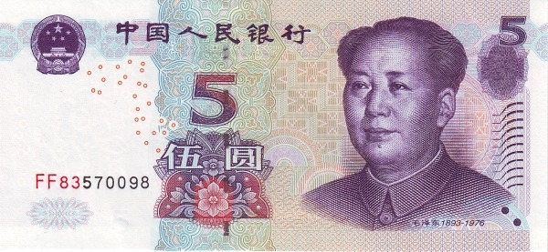
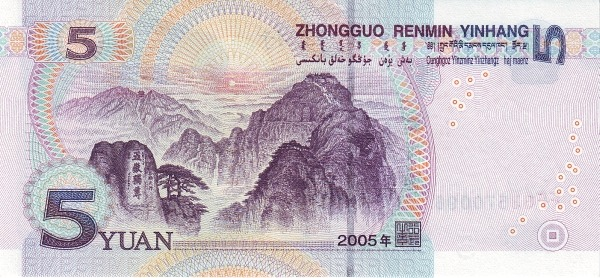
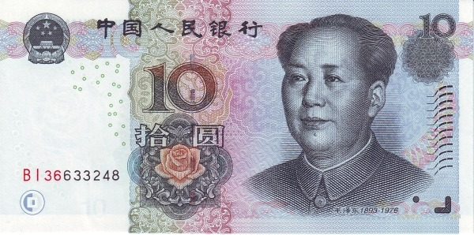
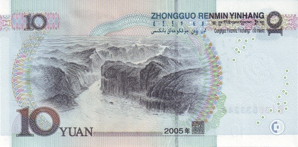
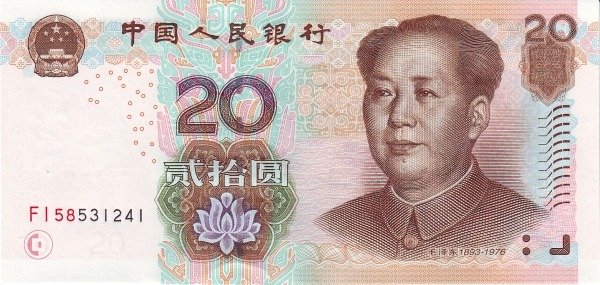
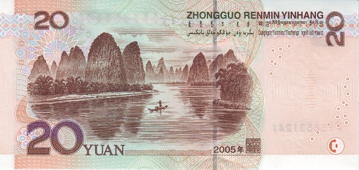
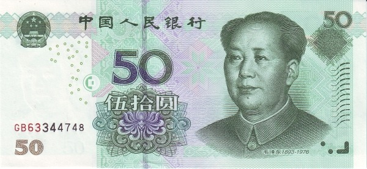
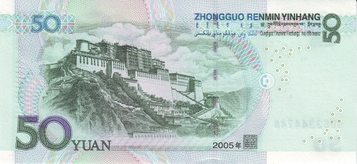
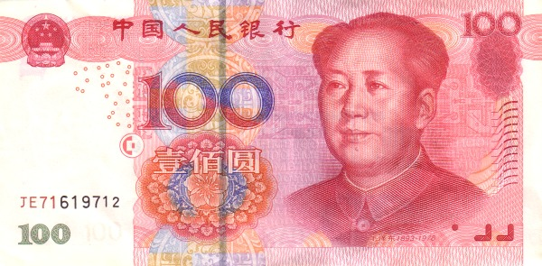
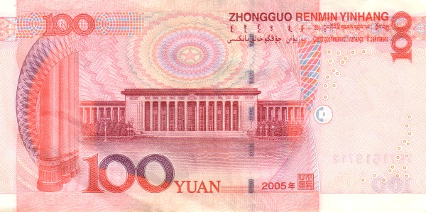

Китай - Китайский Юань
5 юаней
 Лицевая сторона - Мао Цзэдун
Обратная сторона - гора Тайшань
10 юаней
 Лицевая сторона - Мао Цзэдун
Обратная сторона - три порога верховий реки Янцзы
20 юаней
 Лицевая сторона - Мао Цзэдун
Обратная сторона - пейзаж Гуйлиня
50 юаней
 Лицевая сторона - Мао Цзэдун
Обратная сторона - дворец Потала
100 юаней
 Лицевая сторона - Мао Цзэдун
Обратная сторона - Народный дворец съездов в Пекине